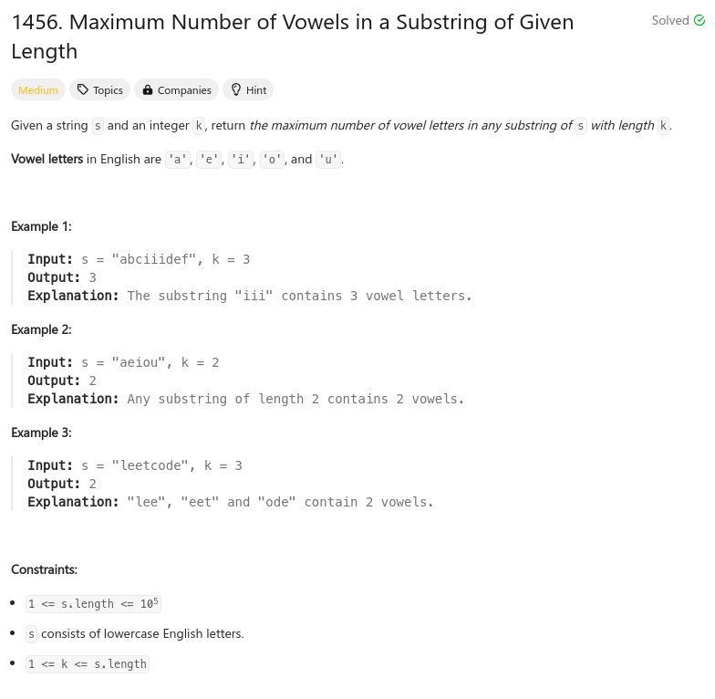

參考資訊：
https://www.cnblogs.com/cnoodle/p/17375813.html
題目：

int is_vowel(char ch)
{
if ((ch == 'a') ||
(ch == 'e') ||
(ch == 'i') ||
(ch == 'o') ||
(ch == 'u'))
{
return 1;
}
return 0;
}
int maxVowels(char* s, int k)
{
int r = 0;
int i = 0;
int cnt = 0;
int len = strlen(s);
for (i = 0; i < k; i++) {
cnt += is_vowel(s[i]);
}
r = cnt;
for (i = k; i < len; i++) {
cnt += is_vowel(s[i]);
cnt -= is_vowel(s[i - k]);
if (cnt > r) {
r = cnt;
}
}
return r;
}